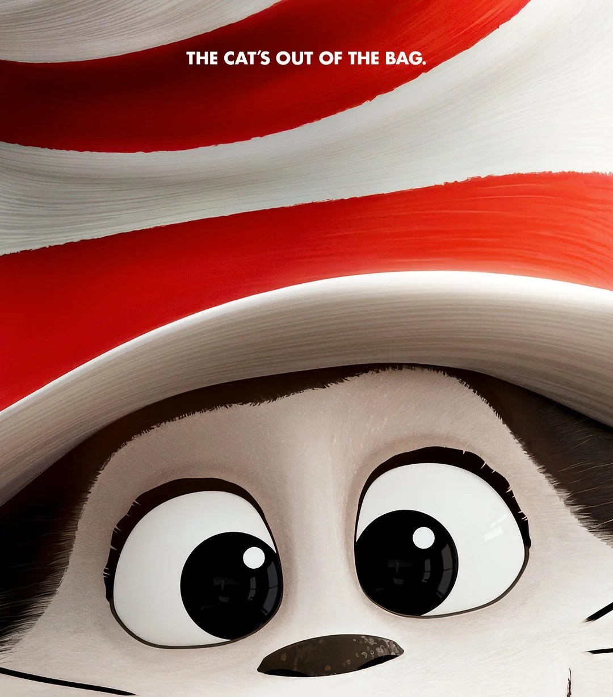

The Cat in the Hat (2026)
Introduction
I honestly enjoyed The Cat in the Hat quite a bit. It's a fun, colorful, and imaginative animated movie that takes a familiar Dr. Seuss character and gives him a new adventure without simply retelling the same old story.
Animation and Voice Acting
One of the first things I enjoyed was the animation. The movie uses this stylized 3D animation with bright, vibrant colors that aren't overly saturated. The characters are cartoonish, their movements are exaggerated, and everything fits naturally into the strange world of Dr. Seuss. I thought the animation looked great and worked really well with the type of story they were telling.
Bill Hader also did a good job voicing the Cat. I liked his performance, and I thought his personality fit the character. Instead of simply having the Cat show up at a house and cause trouble, the movie expands on his world by having him work for an organization that helps children through imagination and creativity. It reminded me a little of Monsters, Inc., except everything operates by the ridiculous rules of Dr. Seuss.
Humor and Dr. Seuss Wordplay
And speaking of Dr. Seuss, I thought the filmmakers did a great job respecting his style of wordplay. Throughout the movie, we meet characters like Pig in a Wig, Rat with a Bat, and all the different Things. Even the dialogue constantly plays around with words. One of the characters is a mysterious monster called Something. What is Something? Nobody knows. It's just Something.
That type of ridiculous humor runs throughout the movie, and I found myself getting a good laugh out of it. I wasn't laughing hysterically, but the clever wordplay definitely earned plenty of giggles.
The Story and Family
The story follows two siblings, Gabby and Sebastian, whose mother has moved them to a new town. Gabby, being a teenager, isn't happy about it. She misses her friends, her old school, and the life she was comfortable with. She feels like her mother doesn't understand her or care about what she wants.
And this is where the movie's main message comes into play.
Gabby is so caught up in everything she's losing that she doesn't stop to consider why her mother made the decision in the first place. As the story progresses, she discovers that her mother actually chose this town because it offered better opportunities for her children. The school has one of the best band programs in the state, which could help Gabby develop her musical talents. Her mother had also been looking into activities like scuba diving for Sebastian because she knew how much he loved adventure.
Her mother wasn't trying to ruin their lives. She was trying to give them better opportunities.
As a parent, I appreciated that part of the story. Sometimes children don't understand the decisions their parents make or the sacrifices that go into them. Gabby sees her mother as someone who just works and does paperwork, without realizing that her mother had a childhood, dreams, and adventures of her own. The movie even reveals that her mother was once one of the Cat's clients.
But Gabby isn't the only one struggling with the move. Sebastian misses the relationship he used to have with his sister. While Gabby wants to return to her old school and friends, Sebastian simply wants to go back to when his sister spent time having fun with him.
I thought that was a nice touch. Gabby is so focused on how the move affects her that she doesn't realize her little brother is hurting too. Eventually, she begins to understand that the world doesn't revolve around her and that the family needs to face these changes together instead of pushing each other away.
The Go-Backer and Accepting Change
The movie uses a magical device called the Go-Backer to build on that message. Throughout the adventure, the characters want to use it to return to a time when things were more comfortable. But the mysterious Something they've been running from turns out to be Thing 2, who was transformed after misusing the very same device.
I thought that was a clever way to reinforce the story's message. Sometimes we're so worried about what lies ahead that we'd rather go backward than face something new. We get comfortable with where we are, even when moving forward might offer something better. Change isn't always bad, and sometimes it's exactly what we need to grow.
The Cat's Lesson About Responsibility
The Cat himself has a smaller lesson to learn. He loves making children happy and encouraging their imaginations, but he has a habit of creating enormous messes and leaving the consequences for someone else. His solution is to use the Go-Backer to undo the mess while keeping the children happy and his Mess-O-Meter under control.
By the end, he begins to realize that there's a balance between having fun and taking responsibility for what you do.
Encouraging Imagination Beyond Screens
Another thing I appreciated was the movie's encouragement for children to get away from their phones and tablets and use their imaginations. Early in the movie, the Cat is trying everything he can to entertain children who are more interested in their devices. Eventually, he gets a laugh out of them, and you can see that little spark of imagination starting to grow.
I would love to see more animated movies encouraging that. Growing up, we went outside, rode bikes, explored the woods, and turned ordinary places into entire adventures. A forest could become a jungle, and a swimming pool could become an ocean full of danger. We didn't need much to have fun because we used our imaginations.
I think it's a great message to remind children that there's an entire world of possibilities beyond a screen.
Pacing and Predictability
As far as the pacing goes, I thought the movie moved along nicely. Some of the twists were fairly predictable. I figured out the connection between Something and Thing 2 pretty early, and it wasn't difficult to see where Gabby's story was heading.
But that didn't bother me. This is a children's movie, and not every movie needs to be some complicated puzzle that keeps you guessing until the end. Sometimes it's nice to sit back, enjoy a fun adventure, and walk away with a positive message.
Final Thoughts
Overall, I had a really good time with The Cat in the Hat. The animation looks great, Bill Hader does a good job bringing the character to life, and the filmmakers capture the playful wordplay and imagination that make Dr. Seuss so enjoyable.
The story is simple and predictable at times, but it has a good message about family, responsibility, creativity, and accepting change.
It's a fun family movie that reminds us that sometimes moving forward is better than trying to go back to the way things used to be.
Final Rating: 8/10 — Daniel, Nobody Critics
Audience Feedback
Have you seen The Cat in the Hat? Share your thoughts with Nobody Critics.